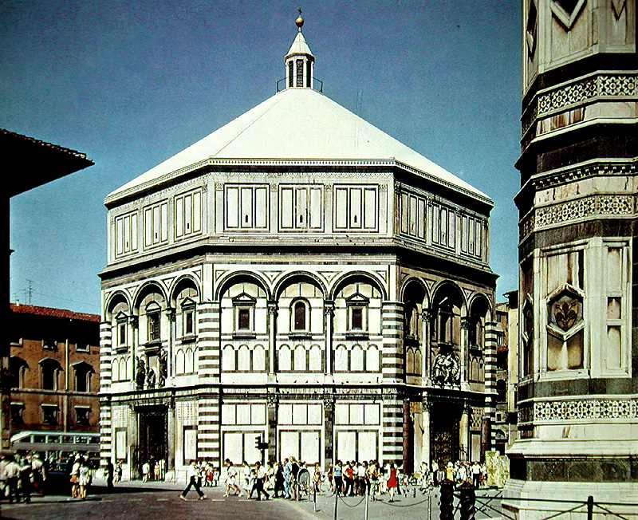
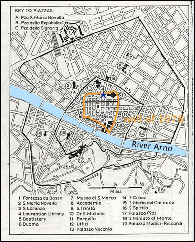
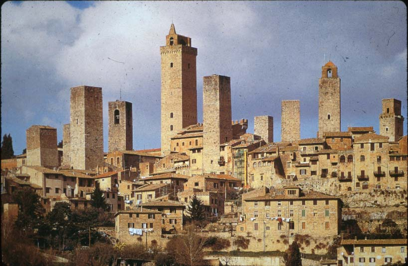

Subsequently, people in the city
began to get involved in trade, and
guilds began to form. The counts and countesses gave charters to
the city as early as 1079. Particularly important was Matilda,
who was the countess of Tuscany from 1076 to 1115. A wall
was built by the countess in 1078, to defend the city from the emperor
(since she sided with the popes over investiture).

The city had grown rapidly by the
end of the eleventh century, with
perhaps 20,000 residents; yet it was still constructed largely of
wood. The stone buildings consisted of churches and the towers
that powerful families had begun to construct; only five towers are
mentioned in eleventh-century documents (from 1077 and 1096), but there
may have been more.
Florence probably began started
becoming organized as a commune in the
late eleventh century also. The town was divided into four
quarters, which were administrative districts; each district elected a
'consul' (the term is first mentioned in 1138), and this group of four
served for a year. [note: the 'consul' was the highest
official of the ancient Roman Republic; the Florentines were
deliberately looking to ancient history for examples of republican
government]. There was also a council of 150 members, basically
all members of landed aristocratic families, mixed with some wealthy
merchants. The artisans and other town-dwellers were called the popolo ('people').
Each family had a little castle
inside the town, with a tower, in the
city, as well as estates outside. These were all destroyed after
1250 (see below), but a nearby town whose towers have survived, San
Gemigniano, shows what it would have looked like.
